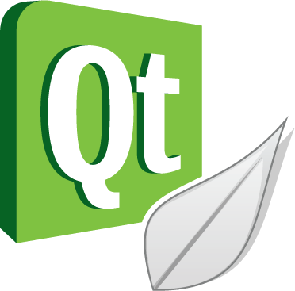
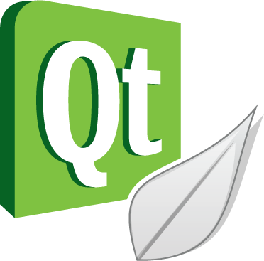

Ingénieur développement logiciel chez Spacebel depuis septembre 2022, Gestion Opérationnelle des simulateurs numériques de satellites.
Également enseignant vacataire à l'IPSA de Toulouse en électronique numériques (2e année de cycle préparatoire intégré) et bases de données (1ere année cycle ingénieur) depuis Octobre 2022
Diplômé ingénieur IPSA promotion 2020, spécialisation dans l'option "Systèmes embarqués", majeure "Espace, Lanceurs et Satellites". Major de promotion ELSS
Spécialisation au cours de laquelle j'ai pu apprendre la programmation en langage Python, Matlab, C/C++, mais également pu être initier à des domaines tels que l'astrophysique, la mécanique spatiale, la détection d'exoplanètes par photométrie.
J'ai également de bonne notions en optique géométrique et ondulatoire dans le domaine du spatial ; en électronique (analogique / numérique) et systèmes embarqués, bases de données SQL


Gestion Opérationnelle des simulateurs numériques de satellites en orbite basse pour le CNES.
- Investigations.
- Recherches de pannes.
- Formation des ingénieurs bords à l'utilisation des simulateurs.
- Réalisation d'essais et de maintiens de compétences.


 


Enseignement pour les étudiants de 1ere année de cycle ingénieur : Initiation aux Bases de données relationnelles (MySQL, Sqlite)
Encadrement des Travaux Dirigés et Travaux Pratiques
Enseignement en 1ere année de cycle préparatoire intégré : Electrocinetique, encadrement de TP
Pour les étudiants de 2e année de cycle préparatoire intégré :
- TD et TP d'électronique numérique (Algèbre de Boole, Portes logiques - utilisation et réalisation à l'aide de MOSFET / Diodes)
- TD et cours de Matlab / Simulink pour l'automatique


Travail de R&D : Fonctions GNC embarquées et autonomes
- Réalisation d'un état de l'art
- Cas d'études sur certaines fonctions GNC de restitution d'orbites et de maintien à poste
- Réalisation d'un librairie en C, intégrant des filtres de Kalman sans parfum pour la restitution d'orbite.


Mission chez le client MBDA - Bourges
Concepteur d'applicatifs de Tests :
- Conception et développement d' ensembles programmes de test.
- Analyse des spécifications.
- Analyse et prise en main de chaines fonctionnelles.
- Conception et développement de logiciels de test.
- Intégration et validation.
- Rédaction de la documentation associée à l'ensemble programme.
- Appliquer et respecter les méthodologies de développement et le processus sur les ensembles programmes.
- Assurer l'archivage et la gestion de configuration des programmes de test.
- Assurer le reporting auprès du hiérarchique.

Interférométrie à dérive de fréquence pour la mesure de la lumière parasite sur l'instrument spatial MOSA de LISA.
- Réaliser une étude du plancher de bruit attendu dans le schéma retenu, et des caractéristiques d'environnement nécessaires à l'obtention du plancher attendu (stabilité des électroniques, de la puissance et polarisation du laser, de la température ambiante,...) dans le contexte du bruit basse fréquence (bruit en ).
- Etudier l'effet des dispersions d'indice et plus généralement des sources possibles de non-linéarité dans le système, et la façon dont elles affectent l'efficacité du traitement par transformée de Fourier dans la restitution des contributions {amplitude vs position} des différents composants optiques du MOSA.
- Réaliser le pilotage du laser accordable, de façon à obtenir un balayage linéaire de la fréquence.
- Mettre en oeuvre et tester l'instrumentation sur un montage représentatif du MOSA (banc optique à base de séparatrices, et contenant un télescope sommaire) sur lequel on pourra déposer des niveaux de contamination contrôlés.
- En lien avec l'équipe Tests MOSA de la Collaboration LISA France, mettre au point la séquence des tests de lumière parasite.

Stagiaire au sein du groupe RENOIR / LISA
Définition et mise en oeuvre du contrôle-commande d'un banc interférométrique pour la mesure des ondes gravitationnelles dans le cadre de la mission spatiale LISA de l'ESA
- Contrôle des composants critiques du banc situé à l'APC de Paris, depuis le CPPM via un LAN au Gbit/s.
- Développement d'une interface graphique en python 3 pour monitorer plus de 200 signaux électriques.
- Contrôle des lasers en puissance et en fréquence, des moteurs piezzo-électriques des injecteurs et de la température des photodiodes du banc.
- Traitement des signaux bruts en sortie des phasemètres en temps réel (100 Hz) pour en extraire la densité spectrale d'amplitude.

Stage de 4e année en qualité de Technicien.
Stage effectué au sein de l'agence Véolia de Boulogne-sur-mer. (62)
- Inventaire et test des conformités machine sur le territoire.
- Contrôle de la conformité des Machines avec Organes en Mouvement (1 500 machines à vérifier au total).
- Réalisation de rapports enregistrés au niveau national.
- Inventaires des défauts électriques signalés par l’entreprise SOCOTEC sur l'ensemble du territoire "Littoral Audomarrois".
- Travaux de maintenance sur différents sites.

Stage ouvrier d'une durée de un mois au sein de la municipalité de Rinxent.
- Entretien et maintenance de bâtiments communaux : Travaux dans les écoles, changements des serrures de la salle de sport.
- Réfection d’un stade de football communal : traçage du terrain, montage, installation et vérification des normes pour les cages de but, entretien de la pelouse, réalisation d'une dalle et pose de cabines et de bancs pour les joueurs.
- Réalisation d’un spectacle pyrotechnique (pour la fête nationale du 14 Juillet) : préparation des artifices (je suis titulaire du C4-T2 de niveau 1 pour la réalisation de spectacles pyrotechniques de la catégorie K3), préparation du site de tir, montage des artifices et du matériel de sonorisation, tir des artifices, nettoyage du site de tir.